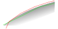
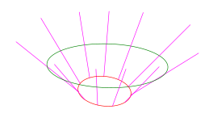

Create lines / points normal to curve
Create lines or points normal to a curve. → → → | Advanced |
The command has various applications, e.g. the deformation of turbine blades.
Input: Source curve or point color: Red | Scaling formula (L=distance): -(L-0.0005)/2| Target color: Green | Entity type: Spline
Result:

Input: Source curve or point color: Red | Number on lines / points: 12 | Reference point color: Green | Target color: Violet | Scaling formula (L = distance): 2*L | Entity type: Lines | Geometric type: 2D
Result:

Input: Source curve or point color: Red | Number on lines / points: 12 | Reference point color: Green | Target color: Violet | Scaling formula (L = distance): 2*L | Entity type: Lines | Geometric type: 3D
Result:

Source curve or point layer (inner curve): Select the layer. Only entities that are assigned to this layer are used.
Source curve or point color (inner curve): Enter an RGB color value for entities present in the model that are to be taken into account. Optionally click the button in the table cell and select an entity of the respective color. The RGB color value is transferred.
Number on lines / points: Specify the number of source points. The points are distributed evenly. The first and last are on top of each other.
Optional source point layer: Optionally select source points. (Instead of distributing them evenly according to the number)
Optional source point color: Optionally select source points. (Instead of distributing them evenly according to the number)
Reference curve layer (outer curve): Select the layer. Only entities that are assigned to this layer are used.
Reference point color (outer curve): Enter an RGB color value for entities present in the model that are to be taken into account. Optionally click the button in the table cell and select an entity of the respective color. The RGB color value is transferred.
Scaling formula (L = distance): Influence the length of the curve or the position of the point. With L, the line is extended to the reference curve or the target point is created on the reference curve.
Entity type: Select which entity type (lines, points, spline) is to be created.
Geometric type: Select which geometric type (2D, 3D) is to be created.